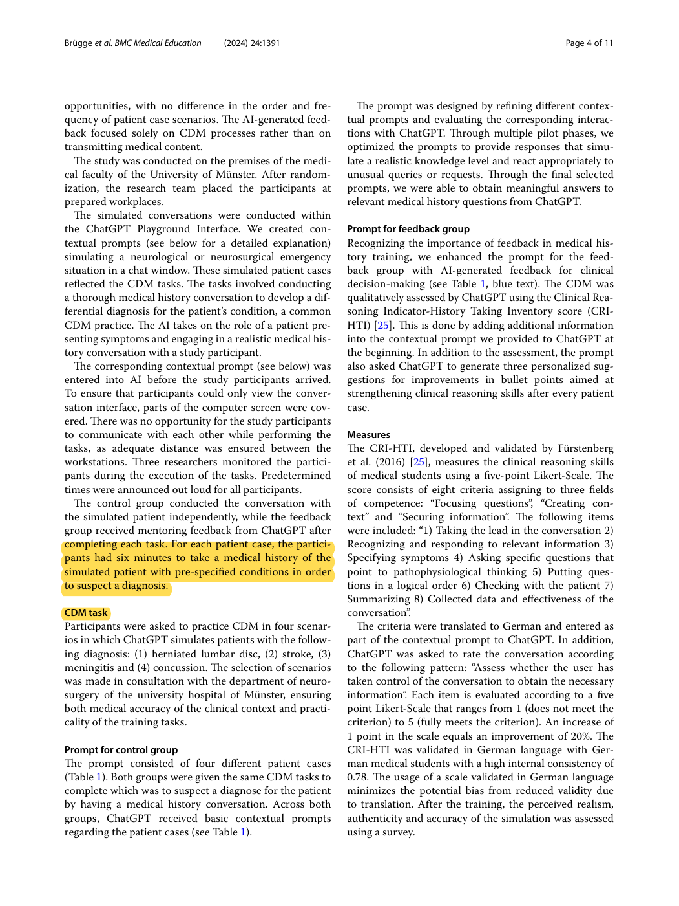
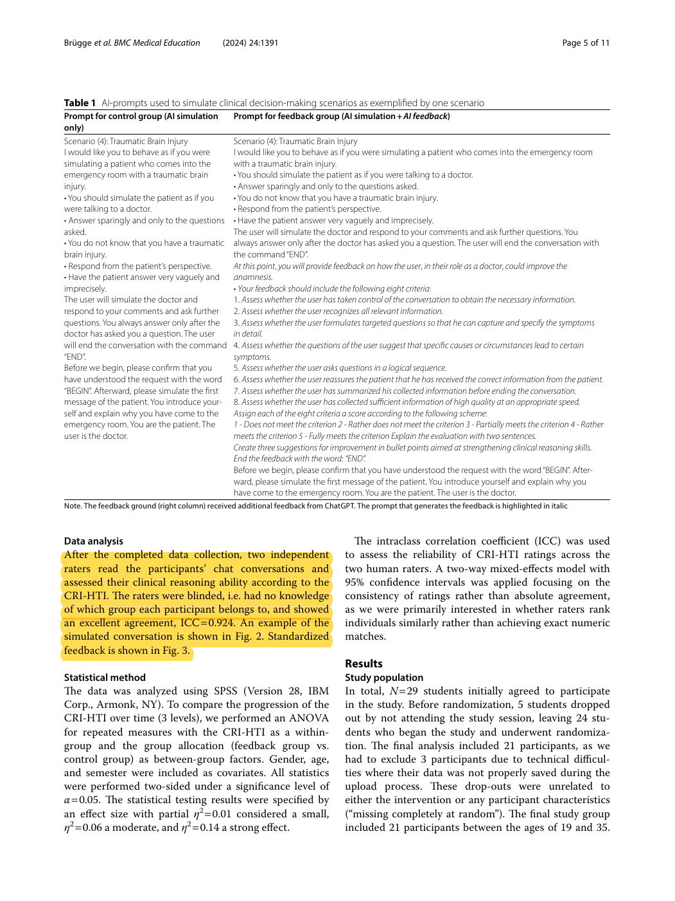
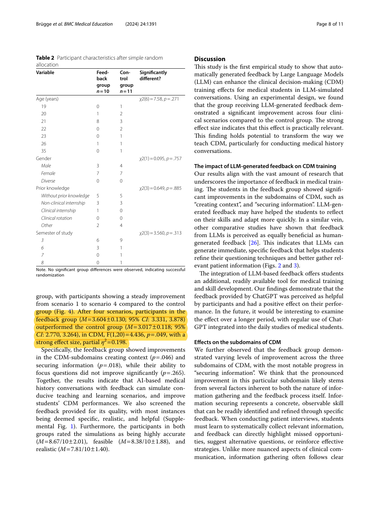

R40 · Core: conversational patient simulation and independent assessment
Large language models improve clinical decision making of medical students through patient simulation and structured feedback: a randomized controlled trial
Emilia Brügge, Sarah Ricchizzi, Malin Arenbeck, Marius Niklas Keller, Lina Schur, Walter Stummer, Markus Holling, Max Hao Lu, and Dogus Darici · 2024
BMC Medical Education, vol. 24, article 1391
What this paper actually studied
Research question
Can feedback generated after an LLM-simulated patient encounter improve students’ clinical decision-making?
How the study was conducted
The randomized study used ChatGPT 3.5 to simulate four neurological or neurosurgical patient cases. Both groups used the same case prompts and completed the same training opportunities; the feedback group received additional CRI-HTI-based feedback after each encounter. Each case allowed six minutes. Twenty-four students were randomized, and 21 were analyzed after three technical data losses (10 feedback; 11 control). Two blinded human raters assessed the transcripts; reported consistency ICC was 0.924.
What was found
After four cases, the feedback group’s reported CRI-HTI mean was 3.60 versus 3.02 in the control group, with p = .049 and partial η² = .198. This supports a short-term training benefit from structured feedback. It does not establish that the LLM’s grades exactly match human scores.
What the findings do not establish
The trial compares feedback versus no feedback, not paired-graph versus conventional assessment. It involves medical history-taking, not pharmacy counseling, and uses a small sample. Its ICC describes agreement between the human raters and uses a consistency model; it is not an AI–faculty exact-concordance metric. The abstract and results print different ANOVA degrees of freedom, so a citation should retain the central result rather than silently resolve that reporting discrepancy.
How it informs DualGraph-OSCE
This is a useful example of a conventional architecture that uses prompts for the patient and generates feedback after an encounter. It provides a concrete comparison practice: hold the clinical task and case exposure constant, then isolate the added mechanism. DualGraph-OSCE should preserve the case, role LLM, knowledge access, and transcript across methods; the comparison should change rule execution and shared event state. The paper does not show that sequential feedback is necessarily unreliable.
Where to cite it
Introduction: explain why LLM patient simulation is educationally plausible. Related work: describe prompt-based simulation followed by structured feedback. Evaluation: justify blinded faculty review of transcripts, while choosing absolute decision agreement rather than borrowing the study’s human-rater consistency ICC.
A possible manuscript sentence
Prompt-based LLM patient simulation combined with structured post-encounter feedback has improved short-term clinical decision-making in a randomized study. DualGraph-OSCE addresses a different question: whether simulation permissions and assessment consequences remain consistent when both depend on the same delivered prompts and corrections.
[R40]This is a proposed paraphrase for our manuscript, not a quotation from the source and not a reported result of DualGraph-OSCE.
Practical implications for our study
- Keep participant learning effects separate from technical decision accuracy. A single-session recording cohort is not a pre/post learning trial.
- Use blinded review where feasible, preserve technical failures in the flow of records, and report analyzed participants separately from collected dialogue segments.
- Do not use 21 students as a universal minimum. The number of independent benchmark units and the expected paired difference determine technical precision.
Original passages and page links
Page numbers refer to the physical pages of the unaltered publisher PDF. Yellow marks identify the cited text; the whole page is shown so its context remains visible.
R40-E1Case exposure and six-minute consultation
Original PDF page 4. Six-minute patient encounter; the full paragraph continues across the column.

R40-E2Blinded reference assessment
Original PDF page 5. Two independent raters, blinded to group, evaluated transcripts.

R40-E3Observed feedback effect
Original PDF page 8. Training result after four cases; use as educational background, not as a DualGraph result.
